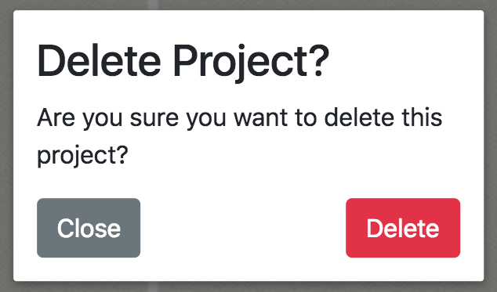

Evan's Page
April 25, 2018
Final Presentation
This week was mostly working on adding finishing touches for our final presentation and demo. I made sure that all kinks were worked out to ensure that the live version of the wallchart tool would not crash during our demo.
Unfortunately I wasn't able to make very many additions to the wallchart tool itself, since I spent the weekend at IEEE SoutheastCon 2018 in St. Petersburg, FL. On the bright side, the UKY team (which included me and one other CS student from UK) won 2nd place in the software competition!
Production Server
I've also been pulling in our newest changes to the production version of wallchart tool at wallchart.tk
April 16, 2018
Version 1.3
We've been slowly adding more QOL updates and stability upgrades, to improve the overall usefulness of Wallchart tool.
- Changed mysql connection to a "pool" connection to improve stability
- Product owner selection has been changed to a dropdown
- Added the ability to export all projects in the database to a .csv file
- We successfully implemented password reset functionality
- Various other bug fixes
Production Server
This week, I also worked to deploy a production version of wallchart tool on the domain http://wallchart.tk. Check it out!
April 9, 2018
Version 1.2
We've completed many features on the wallchart page since the last update:
- Filter by Team dropdown, to view project sticky notes of a certain color
- Search bar, which searches projects' titles and descriptions
- Project Inspector has been changed to a popup, as specified by our customer
- The ability to leave comments on projects
- and various other UI tweaks.
Completed Page
The Completed page now has a simple table of completed projects sorted by completion time. Since we're running short on development time, I think we'll leave most of the development on this page to a future team that wants to pick up this project.
March 27, 2018
Version 1.0
Today marks the official release of version 1.0 of Wallchart Tool. I hooked up the front and back end for project add/delete routes, and also added realtime updates for all project mutations (add, delete, move, edit). All of those changes make wallchart tool into a stable and usable product. Next on the agenda is to install this version of wallchart tool onto Toyota's development server, and receive more user feedback!
March 26, 2018
Simple Modal
Today I made an adapted version of the NewProjectModal that uses transclusion. This new modal is more like a container that can contain different content depending on the use-case. I'll now be able to use this modal component all across the project wherever we need a popup, giving it a unified feel.

March 24, 2018
New Project UI
Today I completed the UI for adding new projects. Dragging in a blank sticky note to a column will cause a modal to pop up, prompting the user for a name for the new project. Providing a name and hitting create will send a request to the server to create a new project.
March 23, 2018
The MySQL Migration
This week, I made great progress in migrating most of the backend functionality from mongoDB to MySQL. Unfortunately, since so much work is being put into the backend, there hasn't been very much visible progress being made. Today I also reworked the backend authentication service to be much more readable. This will make it easier for us (or whoever may pick up this project) to add new roles to the authentication scheme.
March 17, 2018
This week was mostly design/QOL updates since I've been on Spring Break. I changed up the navbar to look a lot cleaner, and tried to start making the wallchart tool (somewhat) mobile responsive. Also, I decided to move the Project Inspector back to underneath the project columns.
March 4, 2018
I added more description to the design page, and added some finishing touches to our slideshow for the midterm presentation.
Feb. 27, 2018
Today our team went on-site to Toyota to demonstrate our progress so far, and receive feedback from the people that would actually be using our application. We got some good ideas for features to add to our project, such as the ability to filter projects shown on the wallchart by team, and various UI changes. Most of the Toyota managers and higher ups seemed impressed with the real-time functionality of the wallchart tool as they dragged projects from column to column.
Unfortunately, it was brought to our attention that Toyota's database team apparently does not support unstructured database systems, such as mongoDB. They requested that we modify our program to work with their current database system: MS SQL 2014. However, without any way to launch a MS SQL server for development purposes, I think we'll have to go with something else. Right now, we are looking at migrating to MySQL. That means that just about every route we've written for our node server will have to be rewritten, which will make our feature development process come to a grinding halt. MongoDB's lack of schema was keeping us agile early in development, but now we'll have to start designing a MySQL schema and keep it up to date, which will surely eat into our feature development speed.
Feb. 23, 2018
I added a few design diagrams to the Design page: high level overview and JWT authentication sequence.
Feb. 20, 2018
This week I updated the progress-tracker website to use bootstrap 4 (well, most of the pages except for this one). This should make the site a lot cleaner, and mobile responsive!
Feb. 14, 2018
The app now loads the position of projects from the database on startup. Additionally, moving projects from column to column will send requests to the backend and update the project positions accordingly in MongoDB. This means that the location of projects is persistent across all users, and on page refresh. Note: real-time updating has yet to be implemented.
Feb. 13, 2018
Implemented the use of JWTs for user authentication. The server is capable of signing JWTs, which are sent to users upon login. The user will then attach the JWT with any future requests he makes to the server. The server can then decode the token to know exactly who made the given request, whether they have appropriate permissions, etc.
Feb. 10, 2018
Added vue-router to the project. This will allow us to host multiple pages as self-contained Vue components.
Feb. 5, 2018
Now using vue-draggable library for drag&drop functionality on project sticky notes. Unfortunately, I'm forced to set up the data in a way that will make it hard to send discrete /move events to the backend. Need to do more research on how to get proper event data.
Feb. 4, 2018
Added mongodb into the mix. We can now write routes in the backend that query from a database.
Jan. 31, 2018
Set up the project using vue-cli. We now have a functional Vue.js frontend and a node.js & express backend.